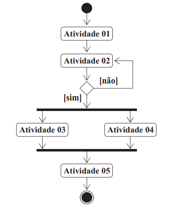

O diagrama de atividades é um dos diagramas disponíveis na UML (Linguagem de Modelagem Unificada) para a modelagem de aspectos dinâmicos de sistemas.
FONTE: Provas e Gabaritos Enade
Com relação ao diagrama de atividades apresentado, avalie as afirmações a seguir.